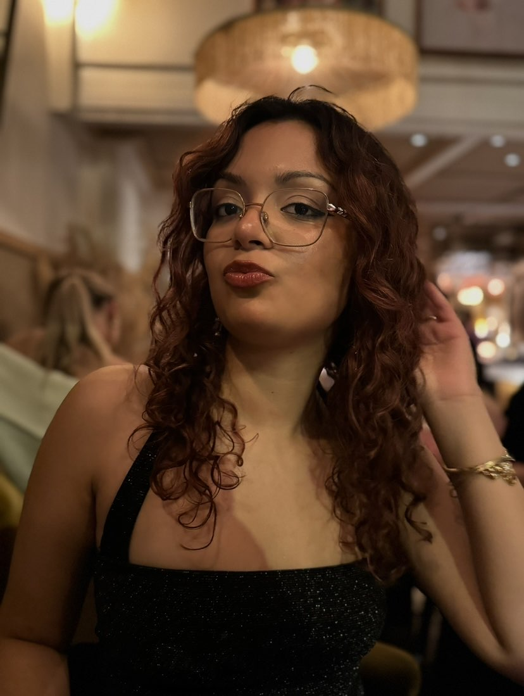

Riya Tagra

I am a 21 year old master’s student doing her degree in Computer Science, with a masters in Computer Systems and Networks.
My family lives in Stockholm but I am ethnically from India and moved to Sweden as a five year old. Having traveled back to India
every year since then, I have seen India change a lot. I have seen technology change the living conditions of people across the country,
from big cities to rural areas. It has brought information and connection to those who were previously very disconnected from the rest
of the world. That in its turn has balanced the scales a great deal, because suddenly everyone has access to a very powerful source of knowledge.
This is merely one part of a multifaceted outcome of the rise of modern technology in the world. This change has been a strong force that has
propelled me towards studying technology, as I would like to stand at the forefront of societal development and I strongly believe that technology
is the way forward.
It is however naive to view technology through such rose coloured glasses. Looking at anonymous threads online, the collection
of personal data and now AI, it is clear that technology can also be used maliciously. The rapid development of technology is always two steps ahead
of slow modern day bureaucracy, and regulations are never created in time. Creating technology comes with a responsibility not every developer keeps
in mind. The risks are not something every parent, child or user of any kind keeps in mind either, which is what makes technology so dangerous.
Education
Civilingenjör in Computer Engineering - Chalmers Tekniska Högskola
- TDA352: Cryptography
- DAT038: Data structures and Algorithms
- TRA290: TRACKS Technology, Politics and Society
The Natural Science Programme - Kungsholmens Gymnasium in Stockholm
- SAMINR0: International Relations
- Diploma Project: The Role of Heat in Repurposing Plastic as a Building Material
- Specialization Course: Future Horizons
Committee Life